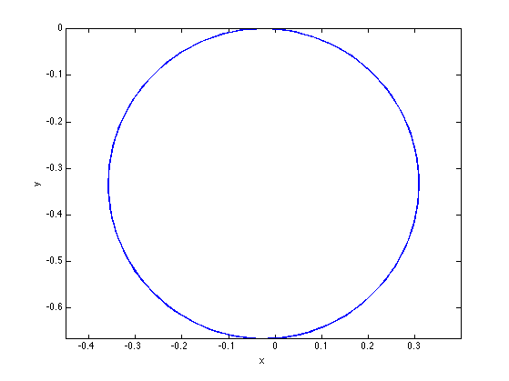
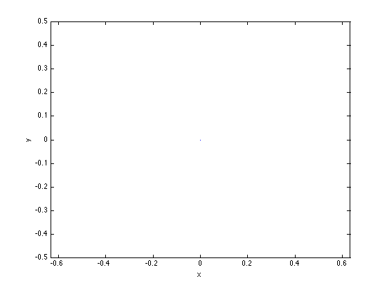
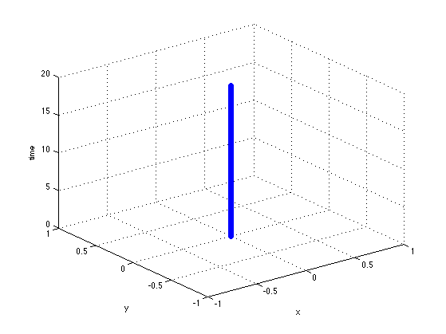
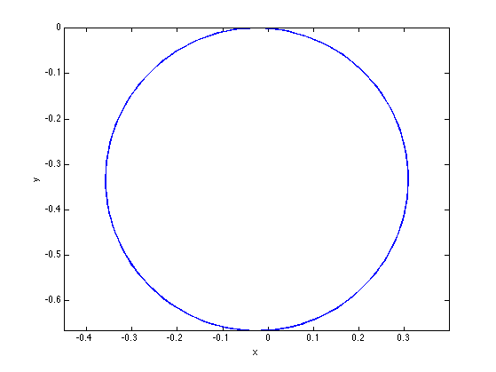
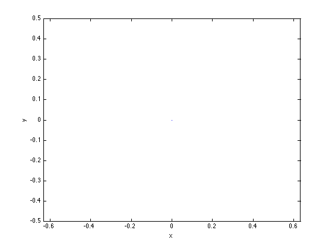
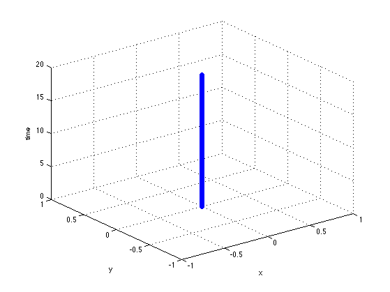
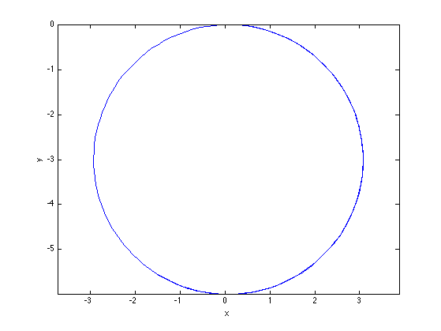
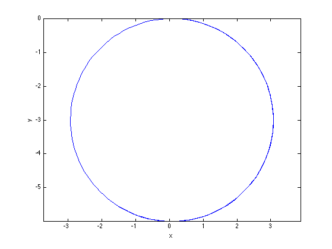

Contents
HW 3, Problem 1
ELEC 5530 - Thaddeus Roppel 2012/09/04 Markus Kreitzer, Levi Smolin, Ray Preston
clear all;
clc;
Declare Constants
r = 1; % wheel radius l = 1; % half the vehicle wheelbase theta = 0; % start theta at zero phi_dot_left = 1; %wheel 2 (left wheel) angular rate (phi2-dot) %phi_dot_right = 2; %wheel 1 (right wheel) angular rate (phi1-dot) timeEnd = 20; %run the simulation for 20 seconds timeDiv = 0.1; %split the simulation into 0.1 seconds timeSteps = (timeEnd/timeDiv)+1; %The number of steps the simulation will have Zeta_I = zeros(3,timeSteps); % Initial position
Run through six different scenarios where the wheel velocities vary.
scenarios = [-3,-2,-1,0,1,2,3]; for phi_dot_right = scenarios theta=0; Zeta_I = zeros(3,timeSteps); % Initial position for i = 2:1:timeSteps R_inv_theta = [ cos(theta), -sin(theta), 0; sin(theta), cos(theta), 0; 0, 0, 1 ]; % Velocity matrix Zeta_I_dot = R_inv_theta * [ (r * phi_dot_left)/2 + (r .* phi_dot_right)/2; 0; (r * phi_dot_left)/(2*l) - (r * phi_dot_right)/(2*l); ]; theta=theta+(Zeta_I_dot(3)*timeDiv); Zeta_I(:,i)=Zeta_I(:,i-1)+(Zeta_I_dot*timeDiv); end figure; plot(Zeta_I(1,:),Zeta_I(2,:)); axis equal xlabel('x') ylabel('y') t=0:timeDiv:timeEnd; figure scatter3(Zeta_I(1,:),Zeta_I(2,:),t); %produces a 3-D trajectory plot xlabel('x') ylabel('y') zlabel('time') end
   
   

 
